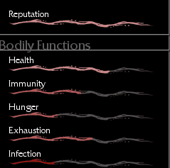

What is Pathologic?
Pathologic is a PC first-person survival game released by Russian game development studio Ice-Pick Lodge in 2005. The original English-language release is known for its extremely confusing and esoteric dialogue, mainly attributed to a poorly done translation, as well as its uniquely strange voice acting. The game was rereleased in 2015 as Pathologic Classic HD, a remaster featuring an updated translation and voice acting as well as having a visual upgrade suited to newer systems. A remake of the game was released in 2019 under the name Pathologic 2 following a successful Kickstarter campaign and is currently still in development. As of writing this, currently only the Haruspex's Route is playable.
Its story follows three playable protagonists - The Haruspex, The Bachelor, and The Changeling - who are tasked with finding out the cause and cure for a mysterious plague that has infected a remote town within the Russian steppe within 12 days. Gameplay for the original Pathologic mainly consists of walking around the town and talking to different NPC characters in a visual-novel style format. You have an overarching Mission, a daily Main Quest, and several Side Quests to complete each day, most of which you find out about through receiving letters throughout the day. You also are put in charge of a group of NPCs called the "Bound," all representing one of the game's three main ideologies which influence each ending. If you fail to complete your Main Quest for the day by midnight, one of your Bound will become infected with the plague.
The survival mechanics come in through having to manage several different stats: Health, Hunger, Exhaustion, Infection (yes, you can catch the plague), Immunity, and Reputation. Items you receive throughout the game can affect these stats, mainly being acquired through a unique trade system where every character you trade with has different items they have and items they want. There is also a basic fighting system, set up in such a way that is both flawed/inconsistent but also easy to master. Pathologic 2 retains many of these gameplay elements and improves upon them in several ways, but also added other mechanics such as a Thirst/Stamina meter for running, and a complex system for treating/curing NPCs.
Pathologic is unique in many ways and will appeal most to people interested in unraveling its deeply intricate world and story, almost like solving a logic puzzle. Each route raises new questions for the player that will be answered in another route. Every decision you make matters and will influence your survival and progression through quests, even affecting other important events within the story. The game does an amazing job in immersing you into its world through the town's layout, architecture, the soundtrack, and most importantly, the characters. Each Bound character is crafted so carefully that they feel like real people, to the point where you will actively need to pick up on their behavior to get the information you desperately need.
Pathologic's atmosphere is also so delightfully bizarre that it's hard not to be drawn in. The town's architecture mixes building styles from different eras and can end up looking completely otherworldly. The game takes place during autumn, creating a warm, hazy atmosphere in most districts- dizzying not only to the inhabitants of the town but to the player. Even the low-poly graphics (Classic HD), repeating NPC models and awkward facial animations lend to the game's overwhelming charm and perfectly complements the strange narrative. There is a lot to love about the game, and I highly recommend you at least give it a shot if you have the chance. The first game frequently goes on sale for around $2 so you don't have much to lose!
If you're interested in playing either of the games, check out the Steam page and see if it's available where you live!
Not sure which version of Pathologic you should get? Here's a comparison [UNDER CONSTRUCTION] I made for the differences between both games (spoiler free!)
Already have the game and want some tips for starting out? Check the Beginner Tips page! Otherwise, have fun!